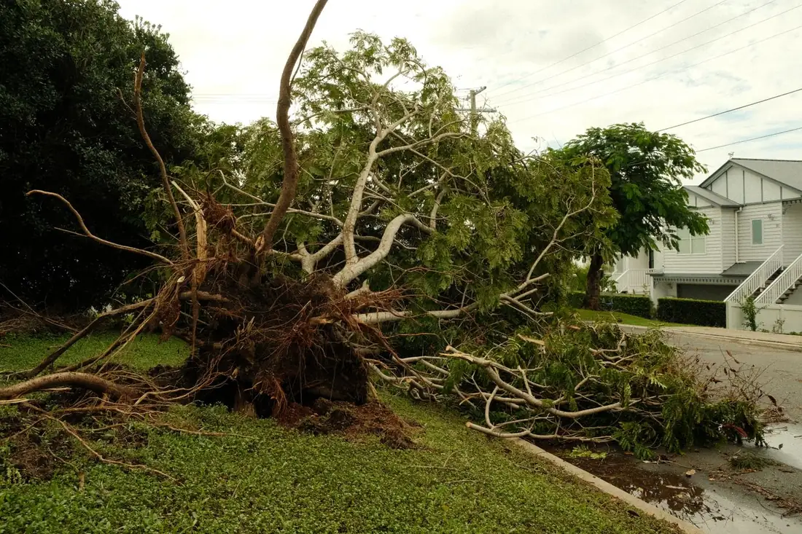

Trees on roofs, cars, fences and driveways. Storm calls jump the schedule, day or night, across Galveston Island and the mainland side of the county.

Emergency tree service in Galveston, TX is what happens when a tree stops being landscaping and starts being a structural problem. We respond to trees on roofs, across driveways, on vehicles, into fences and hung up in power drops — across the island from the East End and Silk Stocking blocks to the West End subdivisions, and on the mainland in Bayou Vista, Hitchcock, La Marque and Texas City. Storm calls are handled before scheduled work, and you get a price before a saw starts.
The first thing that happens is nobody cuts anything. A fallen tree holds enormous stored energy in bent limbs and compressed wood, and the order the cuts are made in decides whether the trunk settles or rolls. The crew reads the load first: where the weight sits, which limbs are in tension, which are in compression, and what is holding the whole thing up.
Next is the hazard check. Downed or contacted power lines mean we stop and the utility comes first, no exceptions. If the tree is on a house we look at whether it is currently holding the roof structure in place, because cutting it free too fast can drop more of the building than the tree did.
Then the tree comes off in controlled pieces, usually from the far end back toward the load, with rigging or a crane taking the weight so nothing shifts onto what it is resting on. Once it is clear, we cut an access path first — driveway, front door, gate — and full debris removal follows.
Because the island stacks every risk factor a tree can have.
The ground is the biggest one. Fine sand with almost no clay content and a shallow seasonal water table produces wide, plate-like root systems rather than deep anchors. Add days of rain before the wind arrives and that sand becomes even less willing to hold. Trees here lever out rather than break.
Then there is salt. When Hurricane Ike pushed water over most of the island in September 2008 and left it there for close to twenty-four hours, roughly 40,000 trees died — about 39 percent of the island’s trees and 47 percent of its canopy. Trees that lived took root damage that still shows up as slow decline, and a compromised root system is a tree that comes out early in the next storm.
Finally, exposure. There is no upwind terrain out here. A canopy on Galveston Island takes the full Gulf wind with nothing in front of it, and the same southeast quarter loads the same side of every tree, year after year.
The cheapest emergency call is the one that never happens. Thinning a dense canopy and taking out dead wood in April or May costs a fraction of what the same tree costs on a roof in September, and it is the single most effective thing a Galveston homeowner can do. See tree trimming in Galveston for what actually reduces wind load, and what does not.
| Situation | Typical range | Notes |
|---|---|---|
| Limb off a roof, no structural damage | $500 – $1,200 | Often a few hours |
| Whole tree off a house | $1,200 – $3,500 | Rigging or crane |
| Tree across a driveway | $400 – $1,200 | Access cut first |
| Uprooted tree, yard only | $600 – $2,000 | Root plate disposal included |
| After-hours or overnight premium | +50% to +100% | Standard for emergency response |
| Crane day | $1,500 – $5,000+ | Very large or unreachable trees |
Four things drive an emergency number. What the tree is resting on, because a roof needs support planning that a lawn does not. Whether a crane is required, which is the largest single line item. Time of day, since night work needs lighting and a bigger crew. And access, which after a storm can mean the street itself is blocked before we ever reach your driveway.
Emergency response is for anything actively causing damage or creating a hazard right now: a tree on the structure, a blocked exit, a limb hanging over where people walk, or a leaning tree with a lifted root plate. It costs more because it happens on the storm’s schedule rather than ours, and it is the right call every time safety is in question.
Scheduled cleanup is for the rest — a tree down in the back yard, broken limbs on the ground, a fence to clear. It goes on the regular calendar at standard rates, usually within a few days once the urgent work across the island clears. After a named storm, most of what we take is this category, and there is no reason to pay an emergency premium for it.
If you are not sure which one you have, call and describe it. We will tell you honestly whether it needs a crew tonight or Thursday.
Storm calls move ahead of scheduled work. During hurricane season, June 1 through November 30, we keep a saw crew and chipper loaded so nobody is packing a truck while you wait. Trees on a roof, a vehicle or a power drop get handled first, then blocked driveways and access, then yard debris. Island-wide response slows after a major storm simply because every crew is working, so the earlier you call the better your place in line.
Usually yes when the tree hit something covered, such as a roof, a fence or a car, and often no when the tree simply fell in the yard. Texas policies vary and many cap tree debris removal at a set dollar amount. Photograph everything before we cut, keep the invoice itemized by structure, and call your adjuster before you authorize work if you can.
No. A fallen tree is loaded like a spring, and cutting in the wrong order releases that energy in a direction that is hard to predict. Add a compromised roof structure, possible live electrical service and a chainsaw, and it is the most common way homeowners get seriously hurt after a storm. Stay out from under it and call.
Because of what they are standing in. Galveston Island soil is fine sand with almost no clay and a seasonal water table sometimes eleven inches down, so roots spread wide and shallow instead of anchoring deep. Under enough wind load the whole root plate levers out of the ground. That is why the classic post-storm image here is an intact tree lying on its side with a wall of roots standing on end.
Expect 50 to 100 percent above standard rates for genuine emergency response, which reflects after-hours crews, hazard conditions and the equipment on standby. A tree off a roof commonly lands between $1,200 and $3,500 depending on size, pitch and whether a crane is needed. We give you a number before we start, even at two in the morning.
Trees on structures, vehicles and driveways get handled first. Describe what happened and we will tell you what it takes and what it costs.
Call (409) 255-0582 for a Free Estimate